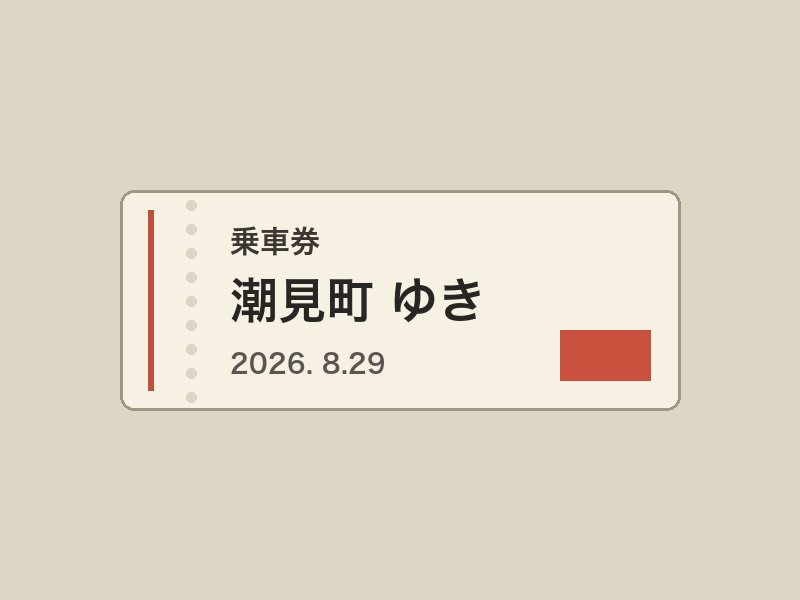
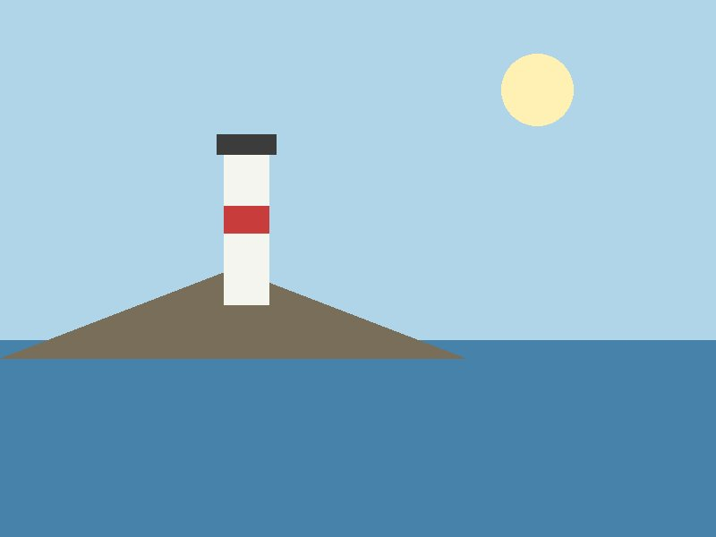
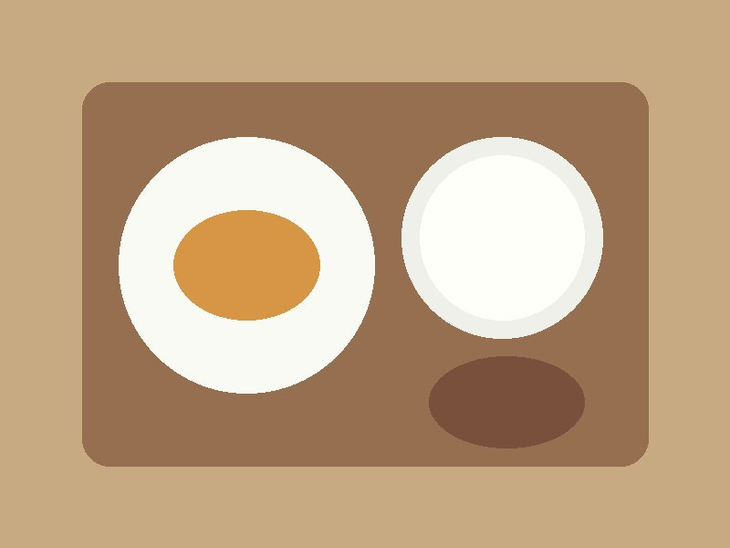
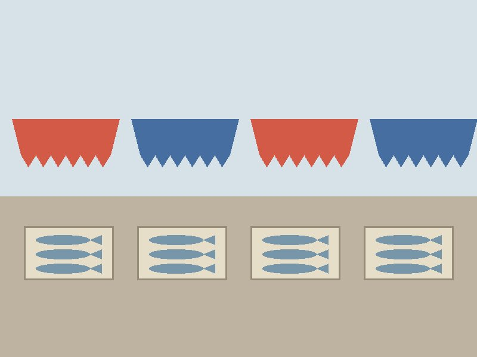
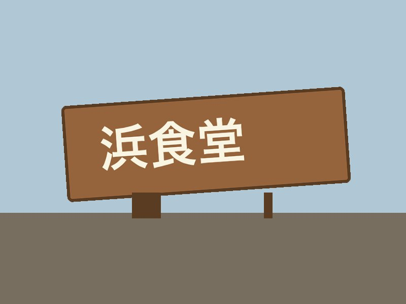
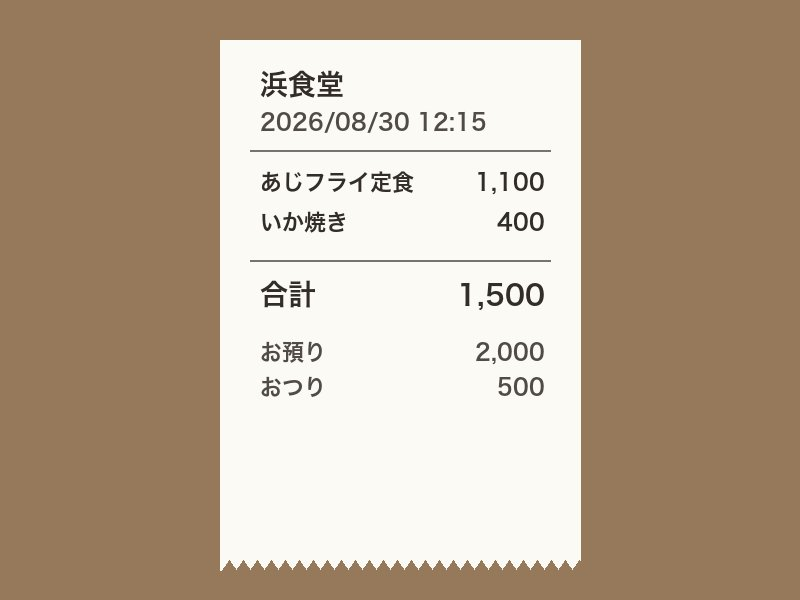
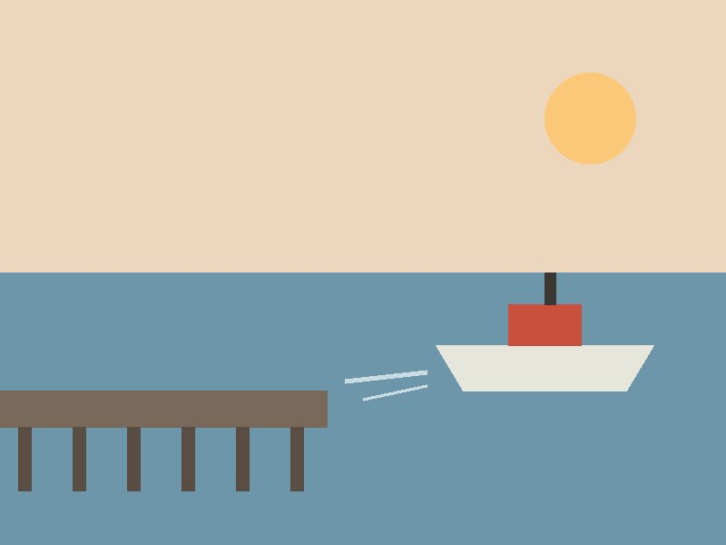

2026年8月29日 ― 8月31日
潮見町 ／ 浜食堂 ／ 岬の灯台
引用（縦線つき）は本人の言葉をそのまま。
地の文は仕分け係が足したもの。
この三日の前に、八月十日に一度、日帰りで潮見町に行っている。そのときの三枚と言葉。

岬の灯台。風が強くて帽子が飛びそうだった。

浜食堂のあじフライ定食。おかみさんが「今朝のだよ」と言った。
帰りの港。夕方の船が戻ってきた。
切符。潮見町まで、乗り換え一回。
乗り換えの駅のホームで録った声。
今、乗り換えの駅。二番ホームの立ち食いそばを食べた。かき揚げがでかくて、汁がしみてて、これはあたり。次の電車まで二十分あるから、ホームのベンチで、これ録ってる。
今日から三日、潮見町。先月は日帰りだったから、今度はゆっくり。浜食堂にもう一度行くのが、まあ、一番の目的かな。あじフライ。今朝のだよって言われたやつ。あれをもう一回。
あと、朝市があるって聞いたから、二日目の朝は早起きして行ってみる。灯台は、天気が良ければ夕方にもう一回。前は風が強すぎて、帽子を押さえるので精一杯だったから。
宿は港のそば。窓から船が見えるといいんだけど。電車来た。じゃあ、また。
朝市から始まり、昼は浜食堂。この日の写真は三枚。

朝市。六時に行ったら、もう半分終わっていた。


浜食堂の看板。去年の台風で曲がったままだって。
浜食堂のレシート。あじフライ定食と、いか焼きを追加。
レシートの印字は「2026/08/30 12:15」、合計 1,500 円。前日の録音で言っていた「灯台は、天気が良ければ夕方にもう一回」については、この日の記録はない。

港。朝の船が出ていくのを見てから、帰る。
旅のあとの一週間に、潮見町にまつわる一行が続いた。
洗濯を三回まわした。旅の荷物は、まだ半分。9月1日
浜食堂の魚を思い出した。9月2日
次は朝市の早い時間に行きたい。9月4日
切符の半券が、財布から出てきた。9月5日
灯台の写真を、机の横に貼った。9月6日
雨。次の旅は、いつにしよう。9月7日
材料：日々/2026-08-10 〜 2026-09-07 のノート 15 枚、写真 8 枚（raw/ を参照。人の写ったものはなし）。
本人の言葉：15 か所 ／ 仕分け係が足した文：7 段落。
元ノート：旅行記/潮見町 三日.md 作成：2026-09-09